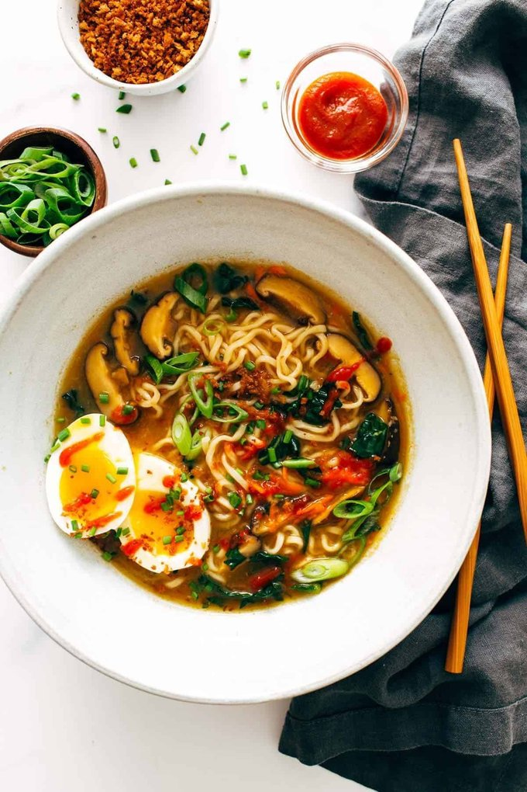

Lasagna

Description
Everyone loves a good lasagna, right?
It's a great way to feed a crowd and
a perfect dish to bring to a potluck.
It freezes well. It reheats well.
Leftovers will keep you happy for days.
Simply Recipes reader Alton Hoover
sent me his favorite recipe for
lasagna which he has been cooking
since his college days. Alton's
original recipe created enough
lasagna for a small army so I halved
it. What is posted here will easily
serve eight people.
Ingredients
- 1 teaspoon sesame oil
- 3 teaspoons grated ginger
- 4 teasppons grated garlic
- 4 cups chicken broth
- 4 cups water
- 1 ounce dried shiitake mushrooms
- 2 packages of instant ramen
- 2 cups chopped kale
- 1 cup shredded carrots
- Siracha
- Crunchy golden panko crumbs
Steps
-
Heat the sesame oil in a large
skillet over medium low heat.
Add the garlic and ginger; stir fry for
2 minutes or until soft and fragrant.
-
Add the broth and the water.
to the hot liquid and simmer for an
additional 5 minutes or until the noodles
have softened. Add the scallions and stir
to combine.
-
Add the instant noodles
A cup of meat sauce, a layer of noodles,
more sauce, followed by a layer of cheese.
Repeat until you have three layers and have
used up all the ingredients.
-
Remove from heat,
stir in the kale and carrots, and top with
crunchy panko crumbs (see notes) and a
soft-boiled egg (optional). Season with
chili oil, hot sauce, sesame oil, and/or
soy sauce and salt to taste.
go back